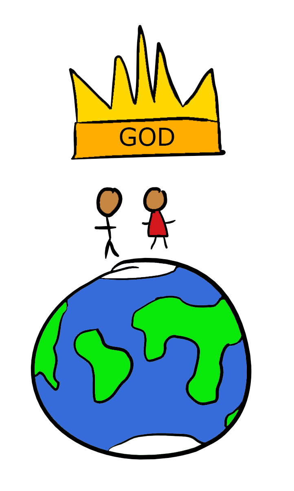
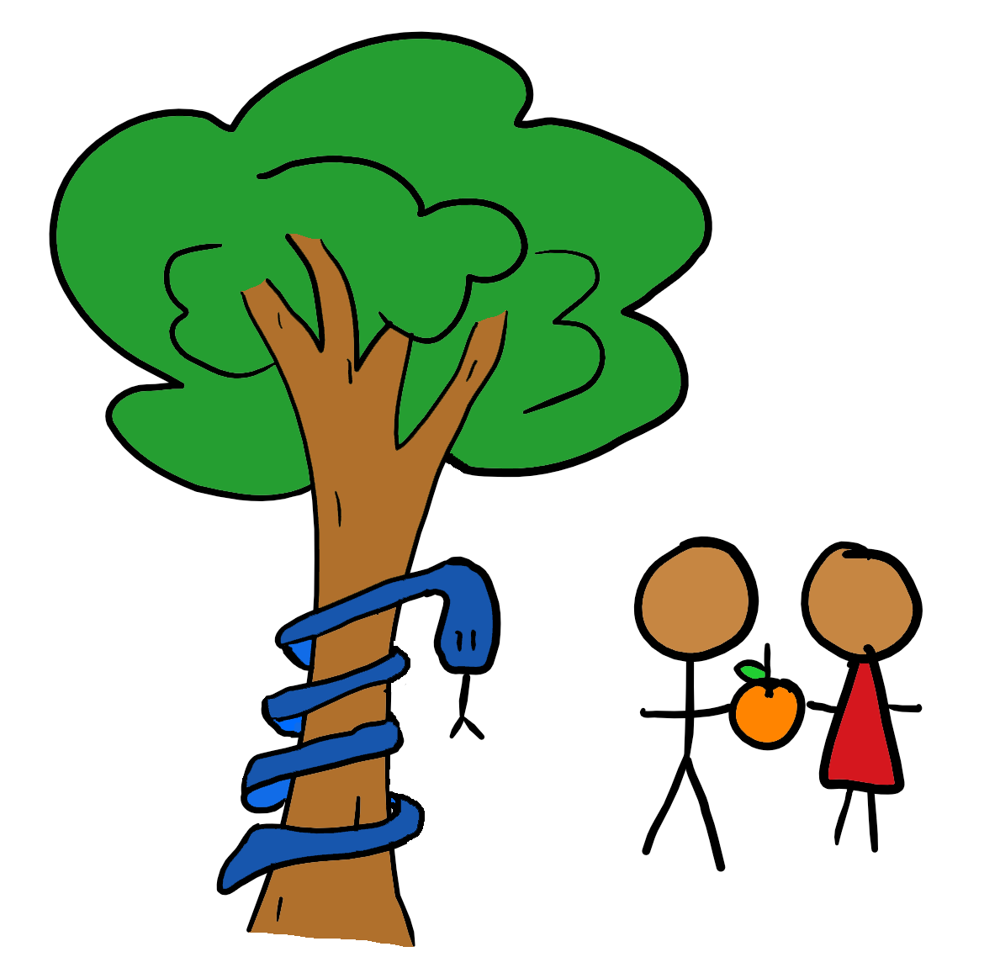
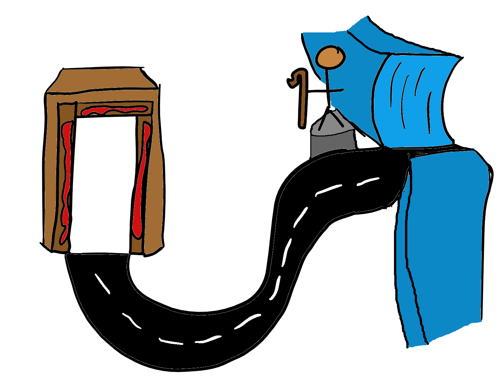
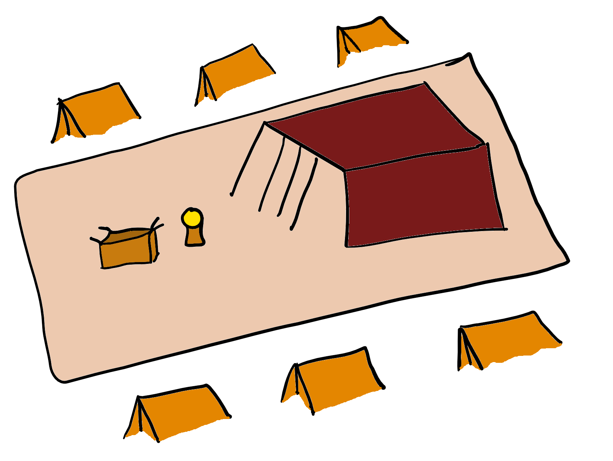
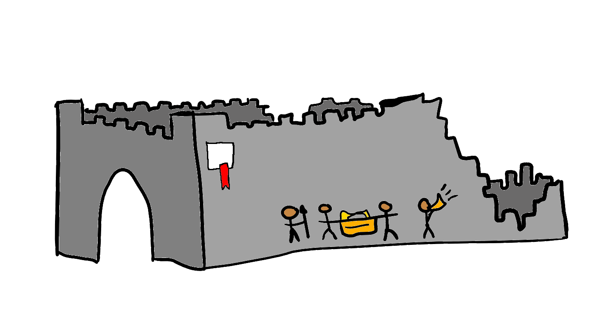

Bible Overview - By Tom Vines, 2017
In the beginning, everything was perfect...
 In the beginning, God created the world. Over seven days, He made everything - both heaven and earth, light and dark, sky and sea, land and all living things. He made Adam and Eve, the first humans, and put them in a place called the Garden of Eden. We were made in God's image, as relational beings who could communicate with God and each other. Humanity was responsible for Earth and accountable to God, with both work and rest being important parts of their lives. God had made Earth and all that was on it for His glory. At this point in time, the world was perfect.
This is the account of the heavens and the earth when they were created, when the Lord God made the earth and the heavens. - Genesis 2:4
...until sin came into it...
 God's creation was perfect… until humans rebelled against God. We had been given free will so that we could truly obey God - if humans did not have the ability to disobey God, our obedience would have meant nothing. Eve was tempted into eating a forbidden fruit that granted her the knowledge of good and evil, and not only did she allow the serpents trickery to control her actions, she also gave some of the fruit to Adam - who did not once protest against it. Their eyes were opened and realising they were naked they attempted to hide from God; which of course did not work. They tried shifting the blame onto the next person, Adam blamed Eve and Eve blamed the serpent. The relationship between them was broken, and their relationship with God was broken. The snake was cursed to crawl on his belly and eat the dust of the earth, with the prediction that one day the woman’s offspring would crush his head. Banished from the Garden of Eden, it seems like all hope is lost for us…
Now the serpent was more crafty than any of the wild animals the Lord God had made. He said to the woman, “Did God really say, ‘You must not eat from any tree in the garden’?” - Genesis 3:1
...but God had a plan...
 Ever since the fall, the world had been full of sin. God wanted a nation that would follow him, and through which he could solve the worldwide problem of sin. He chose to use a relationship to start this new nation. This relationship was with a family, starting with a childless old couple - Abraham and Sarah - and continuing with his promised descendants. Ishmael, the son of Hagar (Sarah's servant), was sent into the desert, saved by God and went on to found his own great nation. Isaac, the son of Sarah, was both the child promised by the Lord and a way that God tested Abraham's faith. Isaac married Rebekah and had twins, Jacob and Esau. Jacob stole Esau's birthright, marrying his cousins Rachel and Leah. On his journey back to the land of his father, Isaac wrestled with the Lord and would not let go until he was blessed. God told Jacob that his name would be Israel and touched his hip socket, wrenching his hip. Jacob had twelve sons, the fathers of each of the tribes of Israel: Reuben, Simeon, Levi, Judah, Issachar, Zebulun, Joseph, Benjamin, Dan, Naphtali, Gad and Asher - the beginning of a new community that could show the rest of the world how to live, and eventually fix the problem of sin.
Ever since the fall, the world had been full of sin. God wanted a nation that would follow him, and through which he could solve the worldwide problem of sin. He chose to use a relationship to start this new nation. This relationship was with a family, starting with a childless old couple - Abraham and Sarah - and continuing with his promised descendants. Ishmael, the son of Hagar (Sarah's servant), was sent into the desert, saved by God and went on to found his own great nation. Isaac, the son of Sarah, was both the child promised by the Lord and a way that God tested Abraham's faith. Isaac married Rebekah and had twins, Jacob and Esau. Jacob stole Esau's birthright, marrying his cousins Rachel and Leah. On his journey back to the land of his father, Isaac wrestled with the Lord and would not let go until he was blessed. God told Jacob that his name would be Israel and touched his hip socket, wrenching his hip. Jacob had twelve sons, the fathers of each of the tribes of Israel: Reuben, Simeon, Levi, Judah, Issachar, Zebulun, Joseph, Benjamin, Dan, Naphtali, Gad and Asher - the beginning of a new community that could show the rest of the world how to live, and eventually fix the problem of sin.
He took him outside and said, “Look up at the sky and count the stars—if indeed you can count them.” Then he said to him, “So shall your offspring be.” - Genesis 15:5
..the Israelites were slaves, but God didn't abandon them...
 The Israelites had been living in Egypt for 400 years and had truly grown into a nation. A nation of slaves. They cried out to the Lord for help, who saw their misery and was concerned for them. Moses, an Israelite (brought up by an Egyptian princess) who had fled Egypt and now lived in Midian, was used as the hand of God. He spoke to the Lord in a burning bush and went back to Egypt - freeing the Israelites from slavery under the hard-hearted Pharaoh with many great miracles and twelve great plagues that showed the glory of God. Once again the Lord showed that he kept his promises, bringing the Israelites out of Egypt and towards the promised land.
I am the Lord your God, who brought you out of Egypt, out of the land of slavery. - Exodus 20:2
...God gave them his law...
The Israelites arrive at Mount Sinai in the third month after being rescued from slavery. There God enters into a new covenant (once again showing he is a relational God) with His people and gives them the Law: both to guide them and to prepare for the coming of Jesus by setting an unreachable standard that only a sinless person could reach. Even today, some of these laws (the Ten Commandments) form the basic structure of society today. While Moses is receiving these laws from God the Israelites become impatient and break the laws they have been given almost before they have even gotten them, creating a golden calf and worshipping it. All those of the Israelites who participated are punished, and God shows how sad and angry their sin makes him, saying to Moses "I have seen these people, and they are a stiff-necked people. Now leave me alone so that my anger may burn against them and that I may destroy them. Then I will make you into a great nation." He was only held back by the promises he made to Abraham and his descendants.
Now if you obey me fully and keep my covenant, then out of all nations you will be my treasured possession. - Exodus 19:5
...and came down into the centre of their camp...
 The Israelites had sent spies ahead to go into and scout out the promised land: spies that came back with reports of huge people and fortified cities. Ignoring the reports of fertile land that flowed with milk and honey, the people were terrified and wished that they could go back to Egypt. The Lord sent them back into the desert for 40 years, promising that every man and woman over 20 would die in the desert and not go into the promised land. Everyone, that is, except for Joshua and Caleb, the faithful spies. Those forty years of wandering were not only punishment, though. God told the Israelites to build a tabernacle, giving them exact instructions. He came and dwelt among them, in the form of a cloud above the tabernacle. Whenever the cloud moved, the Israelites would follow. The Lord came down among his people, and guided them himself - once again a God who wishes to have a direct relationship with us!
Then have them make a sanctuary for me, and I will dwell among them. - Exodus 25:8
...they finally entered the promised land, on God's side...
 All those who had been over 20 years old when the Israelites first reached the promised land had died in 40 years of wandering in the desert - including Moses, whose last words commanded the Israelites to follow God's law. Under the leadership of Joshua, one of the two spies who had remained faithful to the Lord and so been spared, the Israelites once again entered the promised land. This time, they had faith in the Lord, and in the first major battle, the victory was all due to him. They marched around Jericho, and after seven days the priests blew their trumpets, and with a great shout, the walls fell down. None were spared, except for Rahab and her family, who feared the Lord and had helped the Israelite spies. The Israelites had many battles with the inhabitants of that land, and in all the situations where they obeyed God, they succeeded. However, when they didn't, they suffered a dismal defeat. God showed that he would aid his people with his miraculous power… but only when they were faithful to him - when they were God's people, and did not belong to themselves.
By faith the walls of Jericho fell, after the army had marched around them for seven days. - Hebrews 11:30
...humans ruled over Israel, which was often straying from God...
 The Israelites were finally living in the promised land. However, things still weren't anywhere near perfect. The Israelites were constantly straying from God and being defeated by their enemies - only crying out to the Lord and being delivered from their oppressors when all else fails. A succession of judges governed Israel under God, but many of them were not themselves faithful to him. Then the Israelites rejected God as their king once again by electing their own king who could take them to war like all the other nations. The Israelites had centuries of being ruled by kings - many of whom did not serve the Lord, and others who started off good, but then succumbed to sin and drifted away from God. The Israelites, once united, split into two kingdoms: Israel and Judah. A people chosen by God to be his holy people had become often almost undistinguishable from the numerous other nations of the world.
The Israelites were finally living in the promised land. However, things still weren't anywhere near perfect. The Israelites were constantly straying from God and being defeated by their enemies - only crying out to the Lord and being delivered from their oppressors when all else fails. A succession of judges governed Israel under God, but many of them were not themselves faithful to him. Then the Israelites rejected God as their king once again by electing their own king who could take them to war like all the other nations. The Israelites had centuries of being ruled by kings - many of whom did not serve the Lord, and others who started off good, but then succumbed to sin and drifted away from God. The Israelites, once united, split into two kingdoms: Israel and Judah. A people chosen by God to be his holy people had become often almost undistinguishable from the numerous other nations of the world.
Then we will be like all the other nations, with a king to lead us and to go out before us and fight our battles. - 1 Samuel 8:20
...until Jesus came down and defeated sin and death once and for all!
The world had turned its back on the Lord, but God hadn't forgotten his creation. No one was righteous, no one could follow the law perfectly. Humans could not save themselves, and the majority of them did not even realise they needed to saved. So, God took matters into his own hands. He sent his perfect son, Jesus, into the world - both fully man and fully God. Jesus taught the message of the Lord to the people of Israel and Judah, and then committed the greatest act of undeserved love in all of history, dying on the cross as an final sacrifice for our sins. But this was not only for the few that God had chosen to bring his Son into the world among. Jesus died for everyone, both the Jew and the Gentile. When we choose to put our trust and faith in him, God sees only the perfect record of his Son, Jesus, our sin is paid for and we are welcomed as God's people. We have been saved by faith alone in Jesus alone, who is a gift of God's grace alone!
For God so loved the world that he sent his one and only Son, that whoever believes him him shall not perish but have eternal life. - John 3:16